Dictionaries
A dictionary is a collection of words and phrases sorted by category. LemmaLoom identifies every place in your documents these terms appear, calculates counts of each category, and can also annotate them in the reader. Dictionaries should be used whenever you seek something recognizable by its wording, such as hedging language or the vocabulary of a policy field.
In the case of the examples in this chapter, the focus will be “Hedges”, the dictionary of the “Climate Debate” project. The project can be imported into LemmaLoom via the menu action File ▸ Import ▸ Example Project (see The example project in Chapter 1, Introduction). “Hedges” includes two categories each with eight terms. “Approximators” includes words such as about, around, and roughly, alongside the phrase more or less. “Shields” includes phrases such as I think and it seems, as well as individual words including perhaps and probably. Both of these kinds are used by writers to weaken statements and claims in some capacity, which makes them hedges. Specifically, approximators weaken numeric information or descriptive phrases by qualifying their accuracy, for instance about twelve years. Meanwhile, shields weaken statements by keeping the writer from committing fully to a claim.
Key terms
A dictionary lives inside one project. You can apply your dictionary to every document, set, and query within your project. Your dictionary is comprised of categories of terms.
A category has a name, color, and list of terms associated with it. Your category’s color is displayed for any of the terms in your category within the reader, as well as for its bars within any chart.
A term refers to a word or phrase, such as perhaps or more or less. Terms may be in any language. LemmaLoom will match a term based on text alone; regardless of meaning, LemmaLoom only considers the literal content of terms (see How terms are matched and Checking what a term matches later in this chapter).
Some functionalities in this chapter require indexing, the grammatical processing of each document performed after import. During indexing, LemmaLoom identifies each word and sentence within each document, lemmatizes each word, providing its dictionary base form, or lemma (e.g., seems/seemed → seem), as well as its word class (see Chapter 21, Analysis and Indexing).
When you change your dictionaries, LemmaLoom refreshes the search of all terms within those dictionaries. As a consequence, changes to your dictionary reflect immediately within the Dictionaries section count results, as well as within any enabled dictionary lens, and in any query that employs those terms the next time it runs. If you save an analyzer off your query containing your dictionary terms, that analyzer continues to operate on those original terms (see Saving a dictionary query as a lens or an analyzer later in this chapter). In order to retain the current matches as codings, use auto coding (see Coding the matches later in this chapter).
The built-in Metadiscourse lens highlights hedges in your text via its own word lists and lemma/word-class tagging (see Metadiscourse in Chapter 6, Lenses). A dictionary stores only the terms added by you. Every term can be viewed, moved, and removed.
| Where | What you can do with a dictionary |
|---|---|
| Dictionaries section of a project or set | Create and edit dictionaries; see how often each category and term occurs |
| Lens menu of the reader | Annotate the terms in the open document |
| Add to Dictionary in the selection bar of the reader | Add the selected text as a term |
| Word Sketch section | Sketch the terms of a category one after another |
| Queries | Find the matches, use them in rules, and list the terms with their hits |
Dictionaries and codes
Dictionary categories share much of the visual appearance of codes, as they too have a name and a color and highlight selected passages within your documents. However, they differ significantly in their creation and usage in practice, and that decides which one suits a question.
Codings represent interpretations made while performing qualitative analysis of the document passages. When you interpret a passage as expressing doubt and mark it as such, applying a code called “Uncertainty”, you are assigning it the interpretation, which persists until removed. A dictionary identifies passages based on word forms only, regardless of context and interpretation. LemmaLoom locates each occurrence of the defined terms throughout all documents contained in your project, even the newly added ones, whatever the words mean in their passages.
As a rule, a dictionary is preferable for identifying elements which have distinct word forms associated with them, for instance hedge structures or political policies’ names, particularly when counting them across many documents. Dictionaries also offer a rapid approach to locating occurrences prior to any close reading. Codes suit whatever depends on context, such as a passage that expresses doubt without any telltale word, or an argument that runs over several sentences.
Many studies employ a mixture of dictionaries and coding operations. An example case would involve automatically coding passages based on their matches with dictionary terms and further examining each match individually, ultimately discarding misidentifications (see Coding the matches later in this chapter). Additionally, queries could combine dictionary and code rules, e.g., finding passages marked with the “Uncertainty” code containing shields (see Dictionary rules later in this chapter).
Managing dictionaries
Dictionaries are constructed and edited from within the Dictionaries section. This section exists at the project level and in all sets. It displays the full list of all dictionaries within your project, regardless of whether they were created inside a set’s section. Working in a set’s section only affects what documents are counted toward your counts in that section and which documents a word sketch is generated for.
Opening the Dictionaries section:
- For the project, from within the navigation sidebar, select Dictionaries under Project to load the section in a separate tab.
- For a set, click on the desired set from within the navigation sidebar, then select Dictionaries from the row of buttons at the top of the set’s tab. In a narrow window, the row transforms into a menu. You must then choose Dictionaries from that menu. Note that both smart sets and tags in the sidebar operate the exact same as normal sets.
The image below shows “Hedges” being displayed in the project’s Dictionaries section.
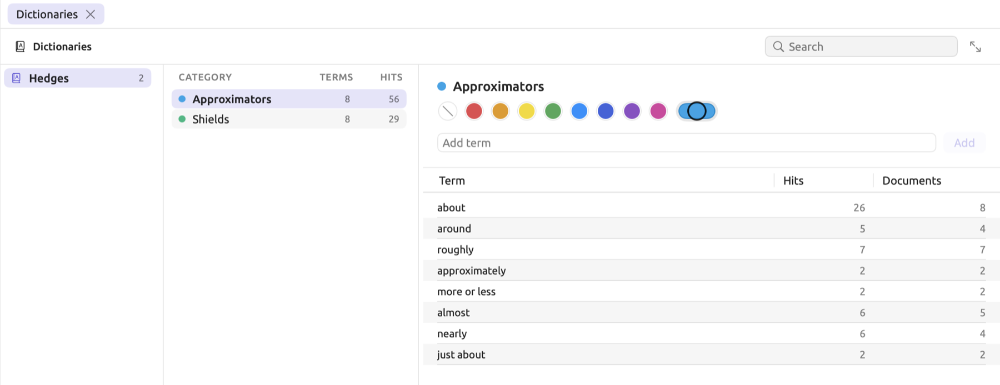
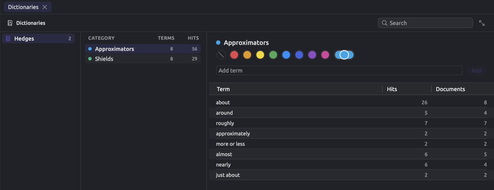
The section comes in three panes. On the left, the dictionaries of your project are listed alphabetically alongside their number of categories. In the middle, the categories of the selected dictionary appear with their color, name, number of terms under Terms, and number of matches under Hits. Finally, on the right, the selected category is displayed with its name and color on top, the Add term field, and the list of its terms. Move the dividers between panes to give any pane more room; projects without dictionaries show No Dictionaries here.
For the project’s section, the header row contains the title, Search field, and Open in a window button, with an icon of two diagonal arrows. This option will open the section in the Codebook window so you may place it next to the reader. The header row of the set’s section includes the Search field alone. During LemmaLoom calculations, the header row contains a spinner.
Use the Search field above to filter the terms from all dictionaries within your project. Dictionaries and categories containing no matching term will disappear. As long as the search runs, numbers will show next to each dictionary indicating how many terms match. Numbers under Terms indicate the same amount for each category. If the selected dictionary has no matching term, LemmaLoom will automatically switch to the first dictionary whose terms match the search criteria.
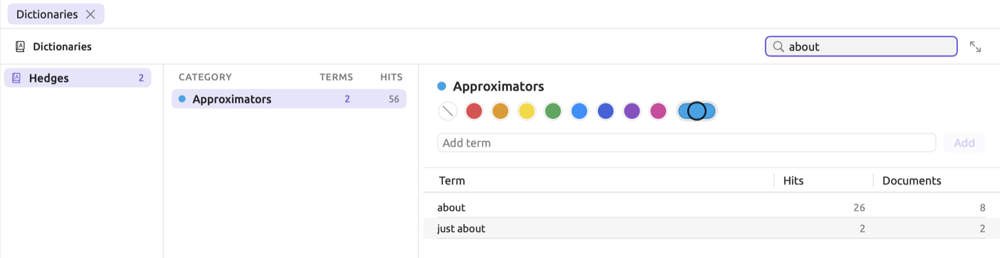
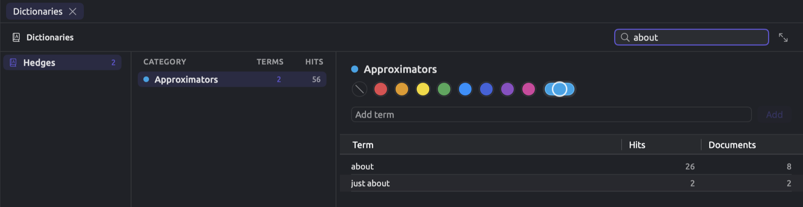
Changes to your dictionaries, categories, and terms are always undoable via Edit ▸ Undo (⌘Z). The menu item describes the change performed, such as Undo Delete Dictionary (see Chapter 23, Undo and Redo).
Creating a dictionary
Generally, the dictionary houses a single concept (e.g., hedging), and the categories contain those types of that concept which you wish to distinguish (e.g., approximators, shields). The lens generates one legend for the concept, and the counts compare its categories.
- Open the Dictionaries section of the project or of a set.
- Click New Dictionary below the list of dictionaries. A dictionary called “New Dictionary” is added and selected, with its name ready to edit.
- Type a name and press Return.
Renaming and deleting a dictionary
To rename a dictionary, right-click on the dictionary in the list, click Rename, and input the new name for the dictionary before pressing Return. To cancel renaming and leave the dictionary’s name unchanged, press Esc.
Deleting a dictionary requires right-clicking on the dictionary and selecting Delete Dictionary. Deleting the dictionary happens immediately.
When a dictionary has been deleted, the dictionary becomes absent from the lens menu of all documents. The lens will also become inactive wherever it may have been turned on previously. All queries that use the dictionary report Missing in the results area and re-run whenever another dictionary becomes selected in them.
Categories and terms
Terms can come from your own reading, from query results, or from published word lists, which you can paste into a category in one step.
Adding a category
Click Add Category below your list of categories, and LemmaLoom adds a new category named “New category” in the first available named color, with its name ready to be changed. Give your new category a name and press Return.
You may want to use color to visually differentiate between various categories in the reader. Selecting a category in the middle pane shows its swatches in the right pane, allowing you to change its color by clicking another swatch below its name, or selecting a color from Color after right-clicking on your selected category. The swatches range from No color, through eight named colors, to Pick any color (which brings up the system color picker).
Each category should ideally be assigned its unique color. Without one, your categories left at No color will be displayed in the lens in the default color, namely the blue of the Blue swatch.
Adding and removing terms
In “Climate Debate”, “Shields” has eight terms. They appear in the right pane, accompanied by the number of times they appear in the entire project.
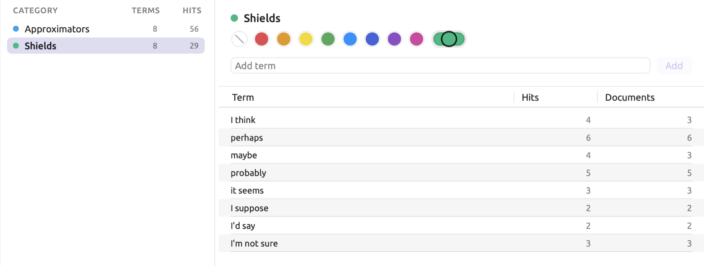
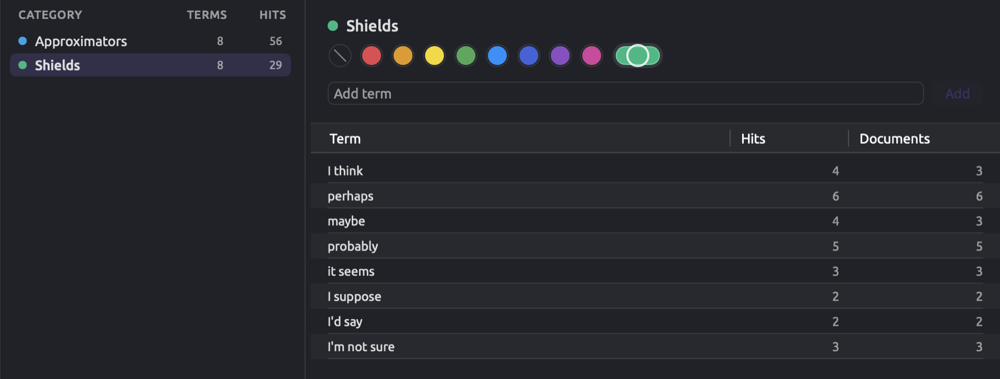
For adding terms to a category:
- Select the category.
- Type a term in Add term, or paste a list of terms, one per line.
- Press Return or click Add.
Here are the rules that LemmaLoom applies as it adds terms:
- Spaces that precede and follow a term are stripped from it.
- A term that is already in the category (case insensitive), as well as repeat occurrences of a term in the list, are ignored.
- Adding a term sorts the whole list alphabetically.
In this field, only a new line separates one term from the next. A comma becomes part of the term, so put the terms of a list separated by commas on lines of their own before you paste them.
Columns for Hits and Documents will accompany every term in the term list. Here, you’ll see how many times (Hits) and in how many documents (Documents) your term has occurred within your project or set. Zero Hits mean either that you spelled something incorrectly, or that the term never appeared within your documents; extremely high Hits compared to everything else deserve investigating further (see Checking what a term matches later in this chapter).
Removing terms can be accomplished by selecting the terms and pressing the Delete key (⌫), or right-clicking terms and choosing Remove from the shortcut menu.
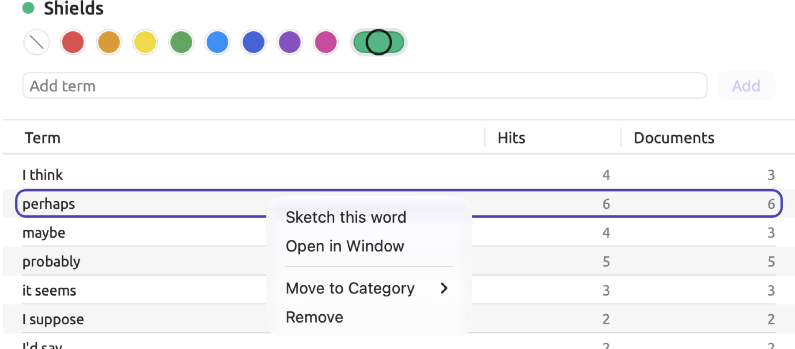
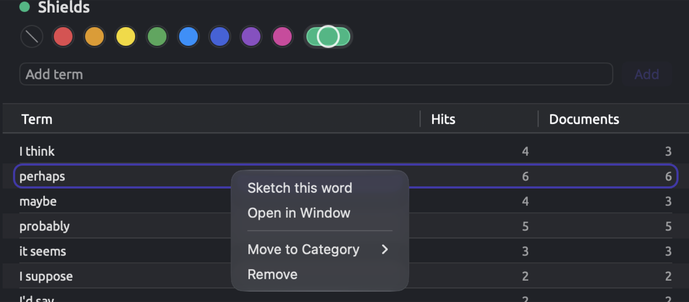
Moving terms between categories of the same dictionary involves dragging terms onto another category within the middle pane; alternatively, you may accomplish moving terms either via Move to Category within the shortcut menu, or Edit ▸ Move to Category via the top menu bar. If the other category already holds a term, it keeps a single copy.
Editing and deleting categories
Renaming a category involves editing the name at the top of the right pane and pressing Return, or right-clicking on the category and selecting Rename from the shortcut menu. Word Sketch in the same menu, which sketches the terms of the category one after another, is discussed further below under Word sketches from a category.
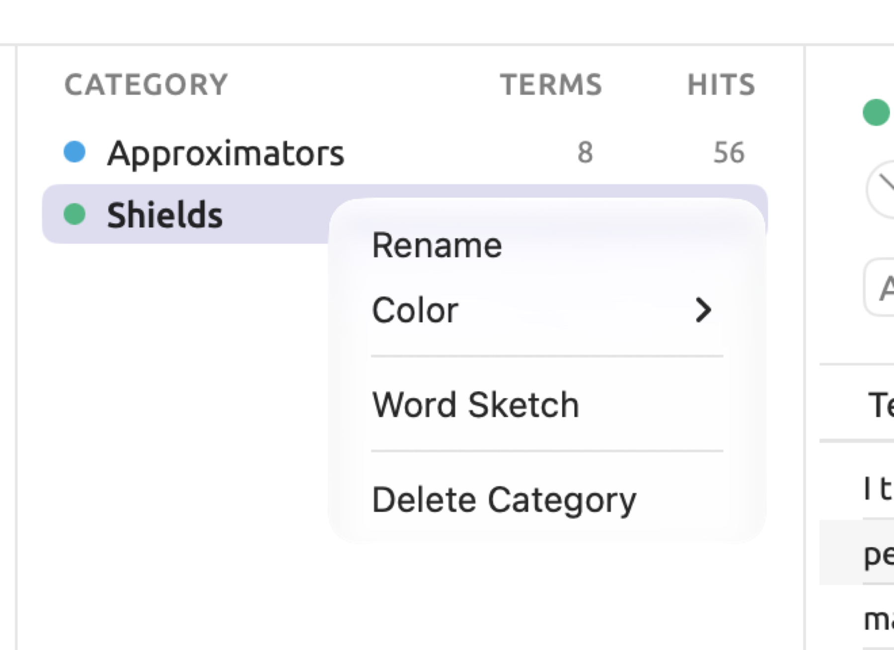
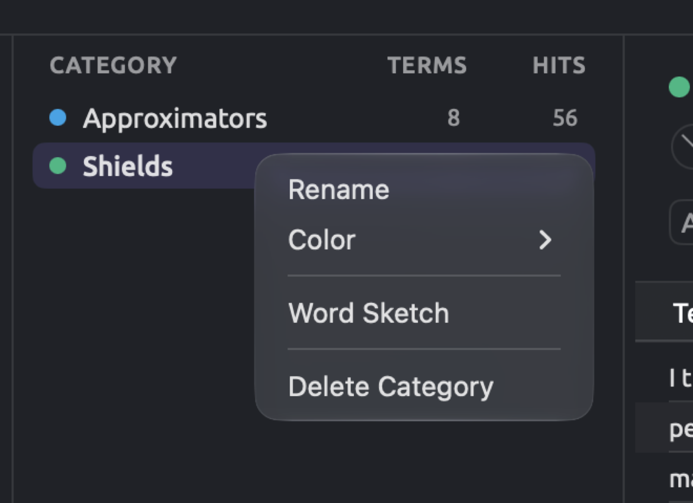
Choosing Delete Category deletes the entire category along with all its terms.
Adding terms from a document
You can add words and phrases while reading in LemmaLoom, directly from your texts.
- Select the word or phrase in the reader.
- In the selection bar near the bottom of the reader, click Add to Dictionary.
- Choose the dictionary, then the category.
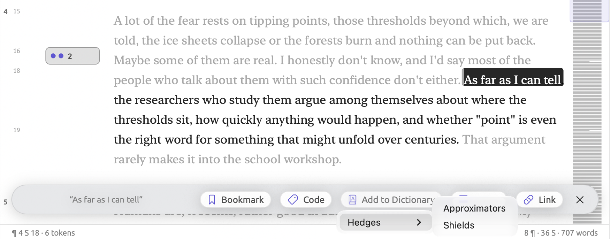
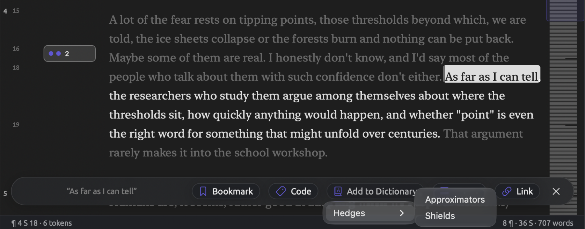
The new term is the selected text without any spaces at its beginning and end.
Only words should be selected. If the selection begins or ends with a comma or period, the punctuation will become part of the term, requiring the same punctuation in the same place in the text for a match.
Add to Dictionary will appear in the selection bar only if the current project contains dictionaries. If the chosen dictionary doesn’t have any categories, an empty submenu will appear.
Adding terms from a query
Word lists, collocate lists, or keyword lists can directly contribute content to a category in one action. Collocates are the words commonly found around a particular word, whereas keywords are the words used more frequently by one set of documents compared to another (see Collocates and Keywords in Chapter 16, Query Results and Statistics). Your query needs to return Words or Text Matches, and its Show should be either Collocates or Keywords, or else Count or Compare with one Group By key. Additionally, the query needs to cover one project because a dictionary belongs to one project.
For instance, in the “Climate Debate” project, there is a keyword query saved for the “Activists” set named “Keywords: Activists”. These keywords, which include words like we and farmer, are not hedging words and therefore belong in their own dictionary outside of “Hedges”.
Here is how to add result rows to a category:
- Run the query.
- Open the Actions menu (the circled ⋯) and choose Add to Dictionary.
- Choose the dictionary, then the category.
LemmaLoom adds the label of each row, limited to the first 200 rows, according to the order shown in the result. In the case of lists grouped by Document, the label is the title of the document; in a word list, it is the word. With keyword lists, only Positive Keywords, which are the keywords occurring more frequently within the set, are added. If the list is counted by Lemma, dictionary forms such as seem will be added, which the lens then finds only in that form, while counting by Word will add the actual word forms as they appear in the text.
Rows matching existing terms within the category, regardless of capitalization, will be skipped. All new terms will comprise a single entry in the undo history, which means one use of Undo will delete them all. Lists generally contain unwanted items, such as proper names, so you should check your category afterwards.
How terms are matched
The dictionary lens, the counts in the Dictionaries section, the Hits of dictionary terms in queries, and auto coding with a dictionary lens all look for dictionary terms in the same way. When you run a query, and the first menu of the text row is set to Text, that query searches for dictionary terms the exact same way. Two of the rules can be changed there, as explained in Finding dictionary matches later in this chapter.
Terms match regardless of capitalization, accent marks, and character width differences. The term perhaps will match Perhaps and PERHAPS. Likewise, naive matches naïve. In German, schon also matches schön since the umlaut is regarded as an accent mark. If you’d like to differentiate between them, then use queries whose first menu is set to Word Form, which preserves accents. The full-width letter forms produced by some input methods (commonly Chinese input methods), as well as their numeric counterparts, will match ordinary ones; thus, CO2 matches ＣＯ２.
All terms match entire words exclusively, meaning that spaces and punctuation marks, including apostrophes, hyphens, quotation marks, periods, commas, semicolons, colons, exclamation points, and question marks, delimit matching areas. Therefore, carbon matches carbon in carbon-neutral while about matches about in just about.
All the individual elements comprising a phrase term should match the exact sequence with the proper spacing between consecutive words. As such, more or less has to have precisely three words separated by one space each.
Only the form you typed is found, so enter each form as its own term; e.g., enter seem, seems, and seemed separately into the category. Instead, if a query has its first menu set to Lemma, entering just the lemma (e.g., seem) will return all its inflectional forms (seems, seem, seemed).
Since Chinese doesn’t use spaces to separate words, a term containing any Chinese characters matches any occurrence of those characters. Terms in Japanese kana or in Thai, Lao, Khmer, Myanmar, or Tibetan script match the same way. 可能 (perhaps) is therefore matched in 可能性 (possibility) and 不可能 (impossible) too. Verify potential matches in the lens for short Chinese terms, and use longer terms where a short one finds too much.
In all other cases, terms follow the whole-word rule inside Chinese text, and Chinese characters are considered letters. Matching a term like CO2 or 2050 with Chinese characters adjacent on both sides, as in 到2050年 (by 2050), requires including those adjacent Chinese characters in the term itself, or alternatively deselecting Whole Words in queries.
All terms are treated individually. “Approximators” contains the terms about and just about, so whenever the latter occurs in documents, it will increase the count for each of them. A term that appears in two categories counts in both. Terms that differ only in accents, such as cafe and café, produce duplicate matches. Keep one copy and remove the other.
Checking what a term matches
In “Hedges”, about has the role of an approximator in “About twelve years ago” (“The Models Keep Missing”), but does not have it in “Here’s the thing about panic” (“Let’s Not Panic”). Furthermore, around does not have that role in “every climate plan I have read manages to step around” (“Who Pays for the Transition”). For “Approximators”, however, the counts include all three.
When counting something from your dictionary, first turn on its lens for several of your documents, and read through your matches (see The dictionary lens below). You can find which terms constitute the bulk of your category counts by looking at the Hits column on your term list; check these terms first. If you find out that your term is primarily being used in some other sense, delete the term or use longer phrases that appear exclusively in the desired context. A query could be even more precise, for instance by searching only for about preceding numbers (see Chapter 17, Query Patterns and Discovery).
The dictionary lens
Each of the dictionaries in the project also acts as a lens, allowing annotations to be made on the text of a document (see Chapter 6, Lenses). The lens highlights each of the matching instances in the sentences containing them.
Below is the image of “Let’s Not Panic”, the document of the “Skeptics” set with the most matches for “Hedges”, with the lens enabled.
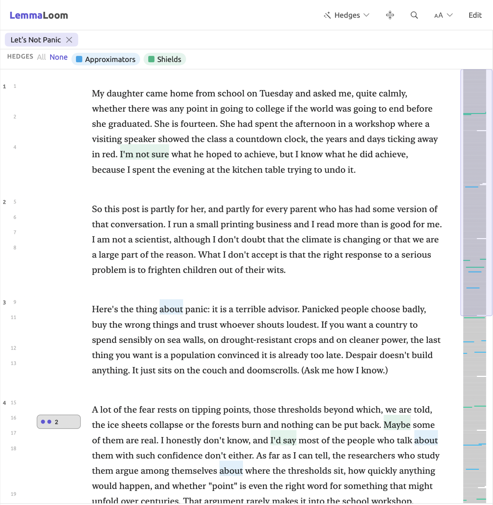
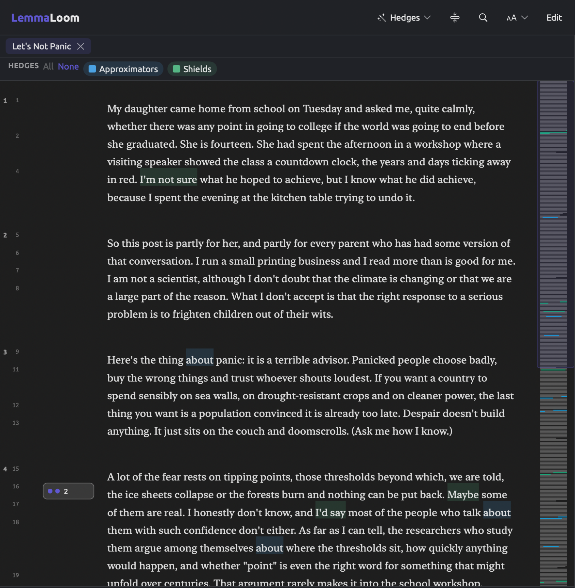
For enabling the dictionary lens:
- Open a document.
- Click the lens menu in the title band of the reader.
- Choose the dictionary. Dictionaries are listed after Bookmarks and Codes, in alphabetical order.
Upon completion of LemmaLoom searching your document for matches with the dictionary’s terms, each match is highlighted in the color of the category it falls into. The legend above your text shows the name of the dictionary and an aspect lenslet for each category as follows:
- When you click on one lenslet, it switches off or on the annotations of that category.
- When you click None, it switches off the annotations of all categories, while All switches them on again.
- When you right-click on a lenslet, you get the options Enable only this, Disable (or Enable), and Enable all.
To show only sentences containing matches, click the button next to the lens menu with the tooltip Show only the sentences a lens annotates; click it again to display the entire document.
To turn the lens off, select the dictionary in the lens menu again; Clear Annotations turns the lens along with Bookmarks, Codes, and query lenses off while Clear All turns off all lenses. The full-screen reader offers the same options in its lens menu.
Lens menus will be disabled before a document’s indexing is completed, with the tooltip Lenses become available when indexing completes. LemmaLoom indexes documents in English, German, and Chinese; hence in documents in any other language, such as French, the lens menus remain disabled. The counts of terms shown in the Dictionaries section, Add to Dictionary, and the queries with the first menu set to Text continue functioning since they process the text directly (for additional information see Other languages in Chapter 21, Analysis and Indexing).
The lens searches for matches based on the visible text, so translations, e.g., “Running Out of Time (German)”, require matching terms in their respective languages. To perform hedging detection in this translation, add German terms such as etwa, ungefähr, and vielleicht to the relevant categories or create separate dictionaries for each language in your multilingual project, which keeps their counts apart.
Coding the matches
To convert dictionary hits into codings, perform auto coding on them from the lens. The options available in the dialog can be found in The Auto Code dialog in Chapter 7, Coding.
- With the dictionary’s lens enabled, choose Document ▸ Auto Code… (⇧⌘A), or Auto Code… in the lens menu. When several lenses that can auto code are enabled, both menus have one item for each, such as Auto Code with Hedges….
- In the Auto Code dialog, each category has a row under Codes, with its checkbox selected. Deselect a category you do not want coded.
- Choose the code for each row. A code with the same name as the category, ignoring capitals and accents, is chosen for you. Otherwise the row offers New Code: …, which creates a code with the category’s name and color once the category finds a passage.
- In Documents, choose This Document, a set, or Whole Project, and click Auto Code.
- When the dialog shows Codings added: with the number, click Done.
A match is coded as a new coding, unless that exact segment of text already carries the code. Only enabled categories from the legend get their own row. If a category is left at No color, that category gives a blue code. If you code a set or an entire project, LemmaLoom searches for matches throughout the texts of all documents in that set or project, thus documents still being indexed and documents in other languages get coded as well.
After a close reading of the new codings, e.g., in the Codings section, remove instances of codings where your term may mean something other than intended.
Category frequencies
The Dictionaries section counts how many times the terms from each category occur in the project or set’s documents. From the counts, you can get an idea of how much each category contributes, what terms contribute to it, and if its hits are distributed across documents, or clustered around certain ones. When you choose a dictionary, or alter it or the documents being counted, LemmaLoom will automatically update the counts.
In addition to the Hits and Documents columns of the two panes, Category Frequencies displays charts of each category’s occurrences, at the bottom of the right pane.
Expand or collapse Category Frequencies by clicking it, and resize the chart area by dragging the divider above it. There are two charts here:
- The first displays bars representing categories in their colors, with the hit count at the end of each bar. The category with the highest hit count is at the top.
- By Document displays bars representing each document containing hits, segmented into parts colored according to categories.
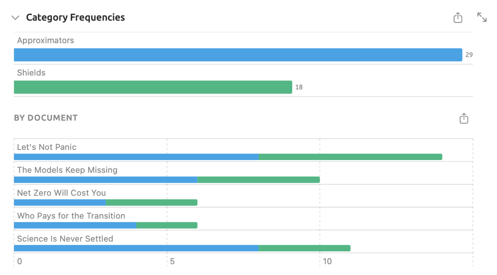
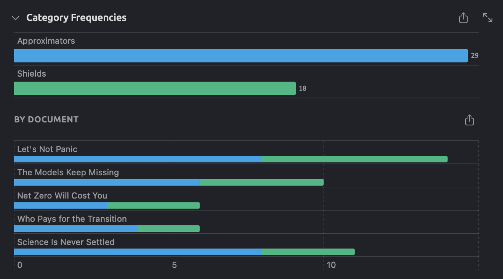
Clicking Open in a window at the right end of the Category Frequencies row allows you to view the charts larger, and place them alongside whichever document you’re reading. The Category Frequencies window displays both of the charts based on the exact same dictionary and project or set they originated from, updating along with the counts. Note that the Category Frequencies window displays one dictionary at a time, so clicking Open in a window from another dictionary replaces the previous content inside.
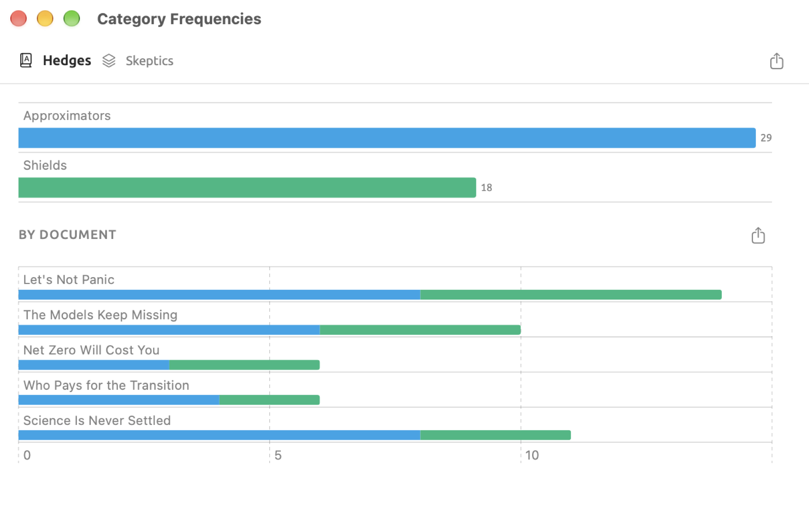
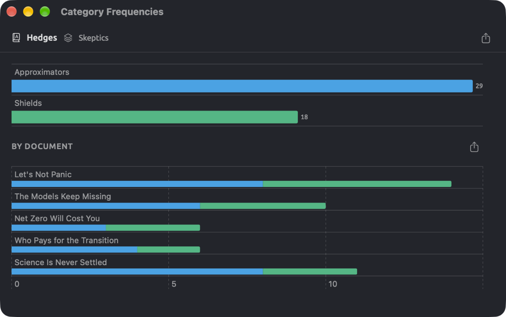
The category count is equal to the sum of occurrences of each of the category’s terms according to the rules in How terms are matched earlier in this chapter. Which documents get counted depends on the context:
- In the project’s section, all documents of the project.
- In a set’s section, documents included in that set. If it is a smart set (like “Wide Reach”), these are all the documents which currently satisfy its conditions. For a tag, they are the documents that carry it.
Counts are determined based on the text contents of documents. As a result, documents currently undergoing indexing and documents written in other languages, such as French, also get included in counts.
Exporting the counts
Each chart contains an Export button in the shape of a square with an arrow. In the case of the first chart, you will find the button on the Category Frequencies row or at the top of the Category Frequencies window, while for By Document, it sits right next to the chart’s title. You can export PNG and PDF formats, both of which store a visual representation of your chart, or you can export a CSV file containing the underlying numerical data.
Each chart saves its own CSV file; for “Hedges”, the suggested file names are Hedges-categories.csv and Hedges-documents.csv. In the table of the first chart each row is a category, and in the By Document table each row is a document with at least one match. The first table has a Category column alongside a Count column. In the second table, there is a Document column followed by a column for each category.
For “Skeptics”, the By Document table contains these counts:
| Document | Approximators | Shields |
|---|---|---|
| Let’s Not Panic | 8 | 6 |
| Net Zero Will Cost You | 3 | 3 |
| Science Is Never Settled | 8 | 3 |
| The Models Keep Missing | 6 | 4 |
| Who Pays for the Transition | 4 | 2 |
These columns add up to give you the figures in the first chart, 29 in “Approximators” and 18 in “Shields”.
Example
When comparing sets, the larger the set is in terms of word count, the more hits you can expect, even if its writers hedge no more than anyone else. To adjust for the size difference between sets, convert the count into a rate.
A rate measures the ratio between two quantities. In this case, it measures the hit counts relative to the number of words in the document set, giving the hit count for each 10,000 words of text. Since the Dictionaries section shows counts alone, you must either calculate the rate manually or via a query. To compute a rate, use the formula shown here:
denotes the rate, represents the hit count of a particular category, and is the total word count of the documents counted. When dividing by , you will obtain the ratio for hits per word, a minuscule figure. Multiply that ratio by 10,000, and you get hits per 10,000 words, which is easier to comprehend and compare.
Consider this hypothetical example of the hit counts displayed in the Dictionaries section for both the “Activists” and “Skeptics” sets. The word counts are those of the example project, rounded to the nearest thousand; the hit counts of the “Skeptics” match the totals shown previously, while those for the “Activists” are fictional. In the example project, the “Activists” set comprises six texts totaling only three hits altogether.
| Activists | Skeptics | |
|---|---|---|
| Words | 4,000 | 3,000 |
| Approximators | 12 | 29 |
| Shields | 20 | 18 |
The activists produce a higher total quantity of “Shields”, 20 versus 18. Their texts, however, hold 4,000 words against the skeptics’ 3,000. If for the activists and , then:
Similarly for the skeptics (, ):
Per 10,000 words, the skeptics use shields 60 times while the activists use shields 50 times. For “Approximators” the rates per 10,000 words are for the activists and for the skeptics; hence, the skeptics lead here by far.
The total number of words per document is visible from Words in the Text tab of the inspector (see Words and unique words in Chapter 10, The Text Inspector). Add up those totals for each of your document sets. The word count in the reader’s status bar includes punctuation and is higher.
As an alternative, you may wish to construct a query for it all instead:
- Click Queries under Project in the sidebar, so that both sets are counted.
- In the Find condition, choose Text · Text Matches.
- In the text row’s second menu, choose Dictionary. “Hedges”, the project’s only dictionary, is chosen.
- Click the control below the dictionary and check only “Shields”. With nothing checked, both categories are counted together.
- In Show, choose Count.
- Click Group By, and in the new row’s field menu choose Set.
- In the menu showing Hits, choose Per 10,000 Words.
The rows named “Activists” and “Skeptics” provide rates of occurrence for the category “Shields”. Within the example project, “Activists” provides roughly 5, while “Skeptics” gives roughly 55. “Skeptics” comes in below the 60 discussed above as the query divides by the precise number of words found in the documents via the Words statistic in the inspector.
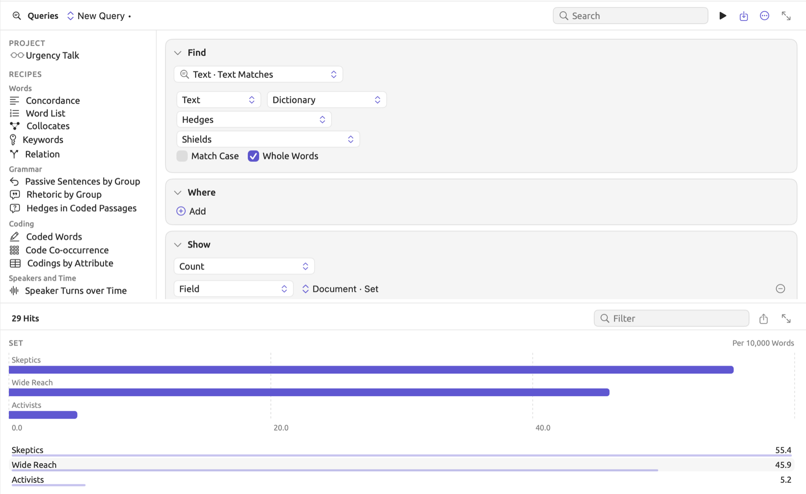
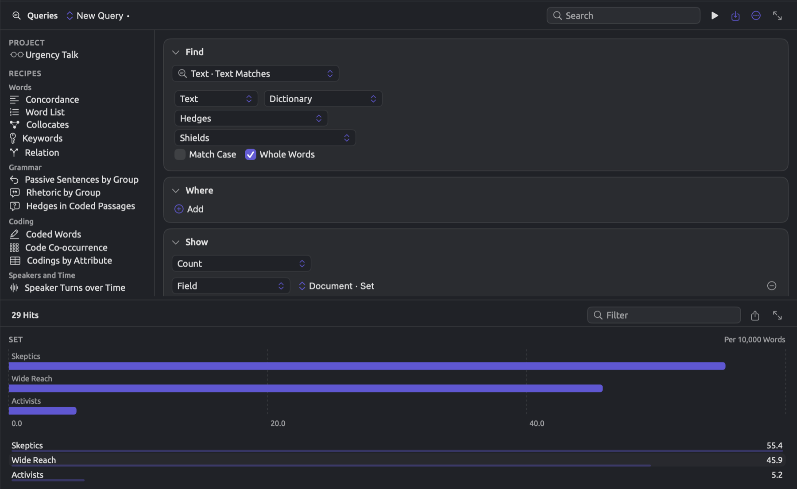
The count contains words the authors quote rather than use; take, for instance, I’m not sure in “Science Is Never Settled”. The chart By Document will assist you in determining whether your matches are spread out among numerous documents or are clustered into one specific document. Please note that the bars in the By Document chart represent counts, hence they must be read relative to the size of each document. For comparing multiple groups of documents, use Compare within a query (see Comparing groups in Chapter 16, Query Results and Statistics).
Word sketches from a category
A word sketch provides summary information on the grammatical company of a word, e.g., its most common subjects, objects, and modifiers (see Chapter 12, Word Sketch). A word sketch started from a category allows you to explore the individual terms within it. When starting from “Shields”, the word sketch reveals what writers hedge about.
The word sketch of the terms of a category comes from right-clicking the category in the Dictionaries section of the project or a set and selecting Word Sketch. This option is disabled when there are no terms available within the category.
For a word sketch of a particular term, you must either double-click the term in the term list or select the term and press Return. Right-clicking a term in the term list and selecting Sketch this word has the same effect. Instead, choose Open in Window in that menu to bring up the sketch in the Word Sketch window, leaving the Dictionaries section visible on screen.
With sets, the set’s tab displays its Word Sketch section. For word sketches beginning from the project’s Dictionaries tab, the project’s Word Sketch tab opens. Underneath the bar at the top of the view is a row with the category name and its color, followed by its candidate words, the words the word sketch can start from. A candidate word refers to the lemma corresponding to each term within a category; for “Shields”, I think has the candidate word think, and it seems has seem. Following Word Sketch, the sketch shows the first candidate word, i.e., the most frequently occurring. Click another candidate word to sketch it.
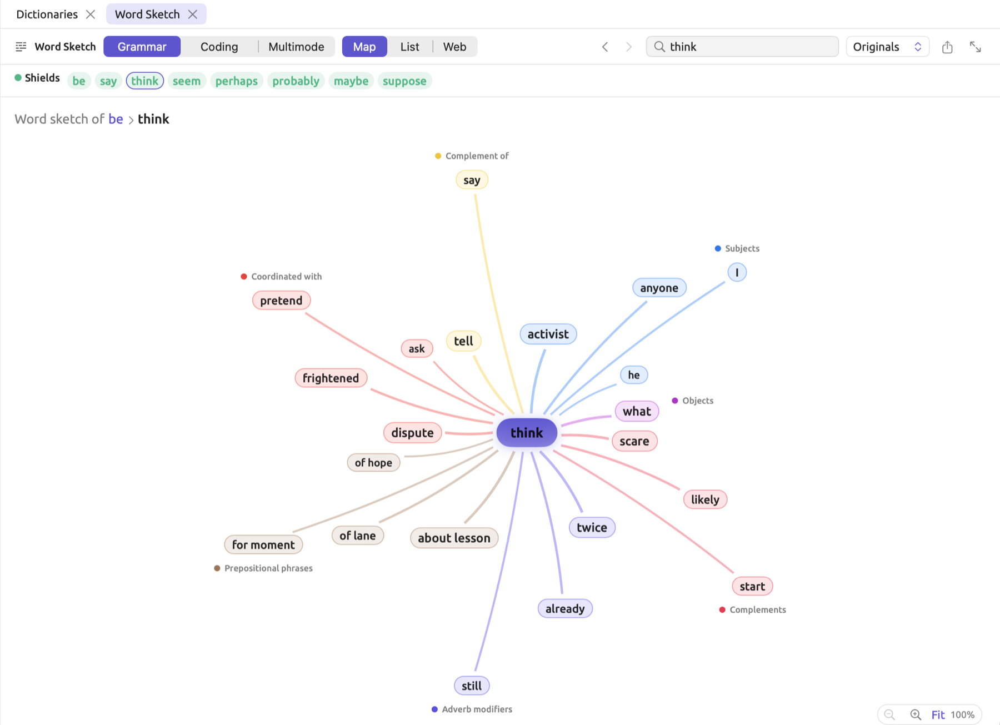
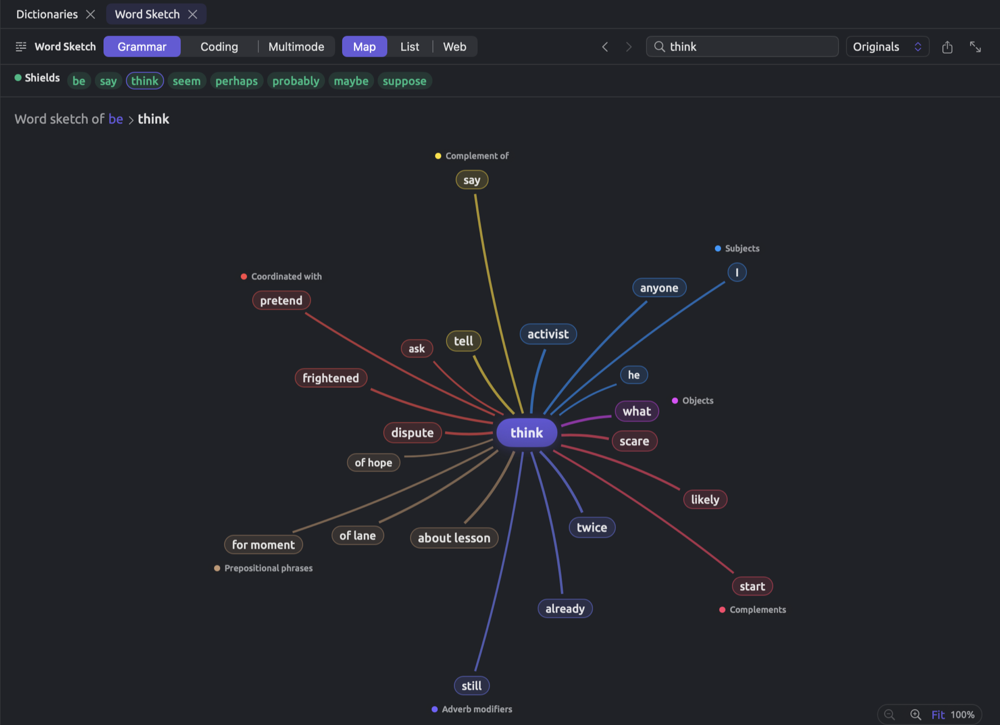
A word sketch requires a lemma to be found for the term. The first thing LemmaLoom will need to do is locate the occurrences of your term within the documents you are analyzing and derive its lemma.
- A single word term (such as seems) would become seem.
- For a phrase term (I think), however, the sketch would be based on the lemma of its grammatical main word (in this case, think, which has a subject I). It seems becomes seem for the same reason. In Key terms in Chapter 21, Analysis and Indexing, more detail is given on the grammatical structure of words.
- If your term contains contractions, indexing breaks it apart into multiple words; therefore, I’d say ends up under say, while I’m not sure ends up under be, since the grammar analysis marks ’m as the main word.
- For any Chinese term which indexing breaks apart into several words, the term is treated as a phrase made of those words.
If your term cannot be located in documents as written, it would get its lemma from the lemmas of the individual words in it. In other words, your term in dictionary form (seem) can find its lemma even if the documents contain the term only as seems.
Any terms which lead back to the same lemma will share the same candidate word. By hovering the mouse pointer over a candidate word, you will see the list of terms linked to it. Candidate words are ordered according to the frequency of appearance of their lemma in your project or set from highest to lowest; a term not occurring anywhere within your corpus in any form will appear last under its own spelling, disabled with the tooltip Not found. Changing the content of the Word field and pressing Return sketches that word and makes the row disappear, unless, of course, the word happens to be a candidate word itself.
Dictionaries in queries
When lenses and counts fall short, whether for finding all inflections of a word, computing rates per set, or searching only inside coded passages, use a query. How to construct a query is explained in Chapter 15, Building a Query. For every text row in your query, there are two menus available. The first decides what the terms should match against. The second starts at Terms and decides where your terms originate from.
Finding dictionary matches
- Open a query. For one document, choose View ▸ Inspector ▸ Multimode and click Query. For a set or the project, open its Queries section.
- In the Find condition, choose Text · Text Matches. A text row appears in the condition.
- Open the menu showing Terms in that row and choose Dictionary. The project’s first dictionary in alphabetical order is chosen; you can pick another in the menu that appears below.
- To use only some of the categories, click the control below the dictionary, which reads None, and check them in the panel that opens. With nothing checked, every category is used.
- Leave the first menu at Text to get the same matches as the lens.
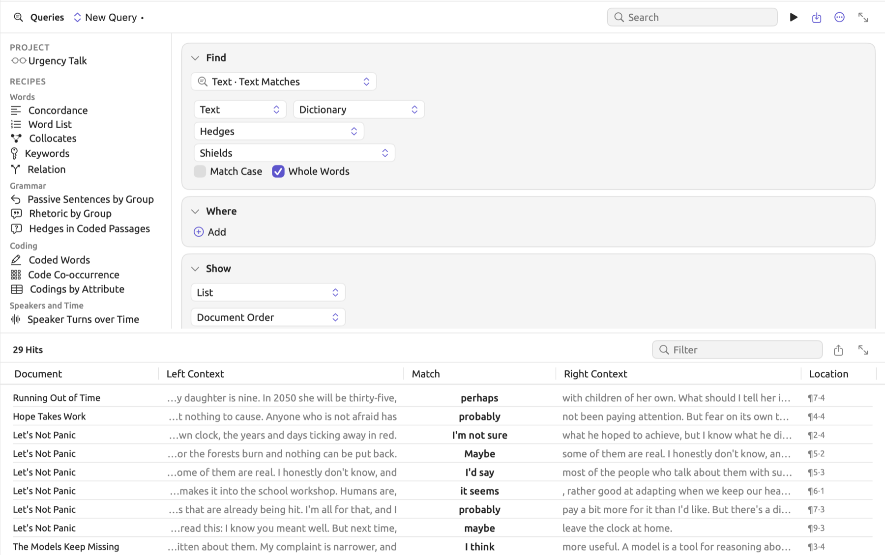
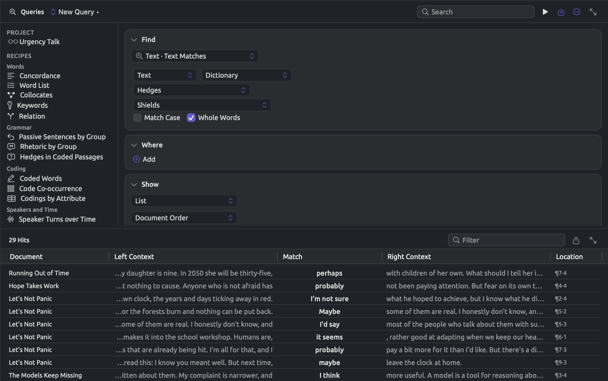
Results show matches in context, and Show offers the usual counts and charts (see Chapter 16, Query Results and Statistics).
The two checkboxes underneath the row, Match Case and Whole Words, influence how the query performs matching. Without Whole Words checked, terms match inside larger words as well (about matches roundabout). When Match Case is enabled, capitals matter, meaning that perhaps matches only perhaps. Lastly, with Text selected in the first menu above, accent and character width differences will be ignored regardless of whether either checkbox underneath is enabled.
Text, which is the default choice in the first menu, compares the query terms to what is written in the document text according to the conditions explained under How terms are matched earlier in this chapter. The other three options, Word, Word Form, and Lemma, compare them to individual words in the text as found by indexing:
- Word compares every word in the query term with each word in the document text, without taking case or accents into account unless Match Case is activated.
- Lemma compares every word of a query term with lemmas of words in the document text. Write query terms as their lemmas. seem matches seem, seems, and seemed. In order to search for terms written as they occur in the text, as in it seems under “Hedges”, use Word instead of Lemma. Lemma ignores Match Case.
- Word Form works the same way as Lemma except with regard to accent differentiation; in other words, it distinguishes German schon and schön (refer to What to compare with in Chapter 15, Building a Query).
For all three methods above (word-based comparisons), a phrase is considered to match where the words occur consecutively in a sentence regardless of line breaks or whitespace between the words. Hyphens within terms are treated as spaces, along with any hyphen that indexing splits into a separate word (carbon neutral matches carbon-neutral in English documents).
With regard to these three ways of comparing (word-based comparisons), Whole Words will have no impact whatsoever. With a Chinese document, the query term 可能 will only match positions where indexing identified 可能 as a complete word of its own. All three ways of comparison operate as Text if indexing has not been performed on the document.
Dictionary rules
Additionally, a dictionary can test other query results, whether those queries are looking for sentences containing a shield, or coded passages containing an approximator.
- In the Find condition, choose what you want to find, for example Text · Sentences.
- In the Where condition, click Add and choose Add Text.
- In the new row’s second menu, choose Dictionary, then choose the dictionary and categories as above.
The row holds whenever there is at least one matching term in the result. Your first menu will start at Word for results that need indexing (such as words and sentences) and at Text for others (codings, paragraphs, etc.). Whenever searching for Words, your results consist of individual words, meaning only one-word terms can match.
Should you wish to locate “Uncertainty”-coded passages containing shields, choose Annotations · Codings in the Find condition. Establish a rule that Code is any of “Uncertainty”, then establish a text row for the “Shields” category of “Hedges”.
Listing terms and their hits
Library · Dictionary Terms in the Find condition shows the terms themselves. Every row corresponds to a term, whose columns include the term name (Name), its category (Category), dictionary (Dictionary), and hit count (Hits). Hit counts are calculated based on occurrences within documents of the query, according to rules outlined in How terms are matched above. In a document’s own query, the current open document becomes the query corpus.
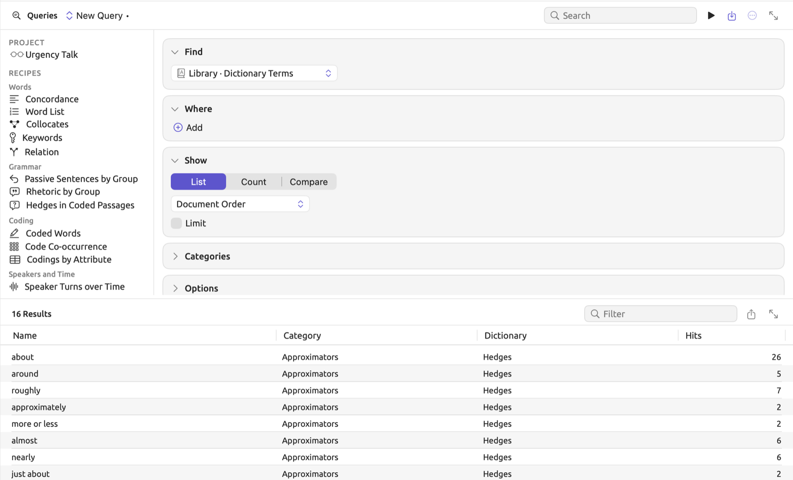
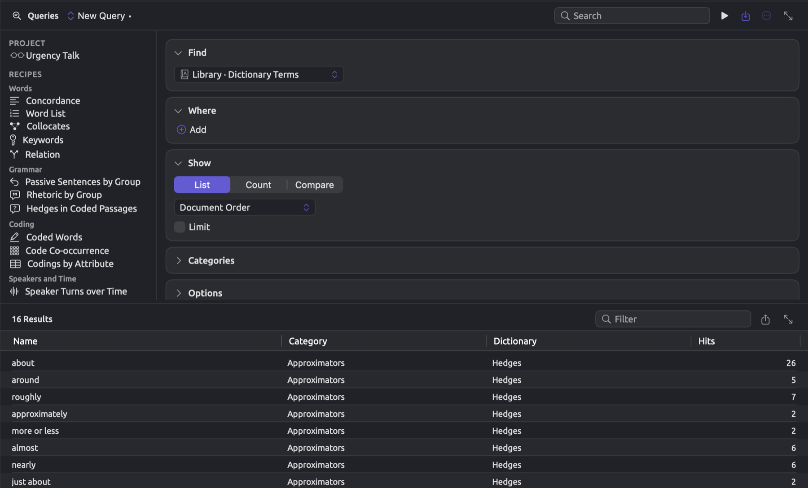
When looking at the term list in the Dictionaries section, hits are displayed separately per category. The query shows the entire list of dictionaries of a project at once; rules may be applied in the Where condition to narrow it. A rule on Dictionary limits the list to the terms belonging to one dictionary, while a rule Hits is 0 returns terms that have not occurred.
The Dictionary Categories by Document recipe
This recipe gives the figures for the By Document chart as a query.
- Open the Queries section of a set or the project.
- In the left column, under Recipes, click Dictionary Categories by Document. It is listed under Speakers and Time.
The recipe finds Text Matches in the first dictionary of the project, ordered alphabetically. It uses all categories, with the first menu set to Text. The result displays Count grouped first by Document, then by Category. An alternative dictionary may be selected in the Find condition. The recipe will appear in queries that span multiple documents, assuming there is a dictionary in your project.
Saving a dictionary query as a lens or an analyzer
If a query makes use of the dictionary and builds on it by adding rules regarding the speaker or the usage of particular codes, then you may wish to save it as a lens (see Chapter 18, Using Query Results).
Query lenses mark every match with one color under the query name. In order to distinguish matches based on categories from the dictionary, include one query category per dictionary category in the Categories condition (see Categories and Color By in Chapter 15, Building a Query). Within each category, select Add Text and configure the second menu within the new row as Dictionary. Then, select only that dictionary category. When enabling a query lens, the dictionary’s terms get captured as they currently stand in LemmaLoom. If changes are made afterwards to the dictionary, then disable the lens and enable it once again.
Analyzers that have been generated from a query execute upon the indexing of every document in all projects. The analyzer also stores its results alongside each respective document (see Turning a query into an analyzer in Chapter 18, Using Query Results). Note that Save as Analyzer… is restricted to queries comparing terms against the words found by indexing. For this purpose, the first menu within the text row must read Word, Word Form, or Lemma. Furthermore, find one of Words, Sentences, or a similar indexed unit.
Analyzers store the terms used during their creation until you update them. When a query that generates an analyzer changes, the analyzer gets labeled as Out of Date. To update a query’s analyzer, repeat the action through Save as Analyzer… in the query’s Save menu. At this point, the dialog reads Update Analyzer, and Update suffices to refresh the stored terms in the analyzer.
Dictionaries in archives
Only the LemmaLoom archive (.llz) of a full project contains the project’s dictionaries. Importing such an .llz file restores the dictionaries contained in the project archive. Learn more about archives and exchange formats in Chapter 22, Exchanging and Exporting.